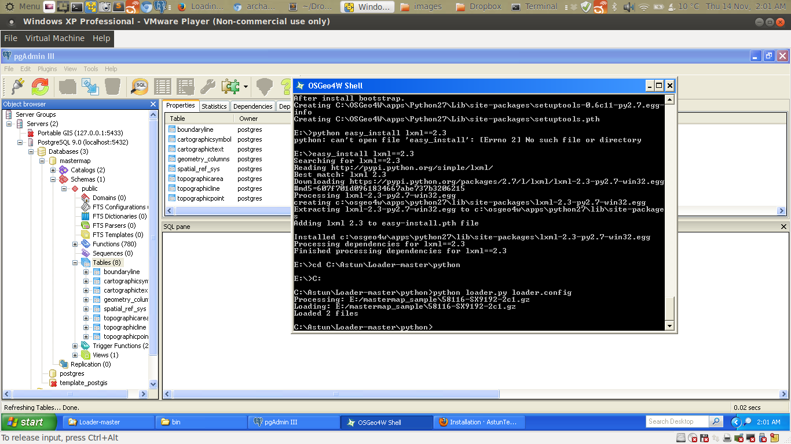

Loading, Styling and Displaying Ordnance Survey Mastermap Data
with Open Source Software
Jo Cook, Astun Technology / @archaeogeek

Starting Point: compressed gz files of Mastermap Data
End Point: Styled Mapping Data useable as vector (PostGIS or WFS) or raster (WMS)
What tools are we going to use?
Definitely...
<<<<<<< HEAD
Possibly...
- QGIS
- MapServer
- OpenLayers
=======
Python
OGR
PostGIS
Possibly...
QGIS
MapServer
OpenLayers
>>>>>>> fcc1094747de9b567efc79dc4195016a97813a4f
Step 1
- Get Loader from GitHub and see the Loader wiki for installation instructions
- Get Dependencies (GDAL and Python via OSGeo4W, and lxml)
- Get Data
- Configure the database
- Configure Loader
Step 2
Run Loader
Examine results in database

Step 3
Connect to PostGIS database using QGIS
Use mapserver plugin to style data and configure map file
Step 4
View data as WMS in QGIS
View data in OpenLayers
Deep dive into Loader
It's not just for Mastermap!
It's not just for PostGIS!
Contributing
Thanks :-)
Find this on github TODO